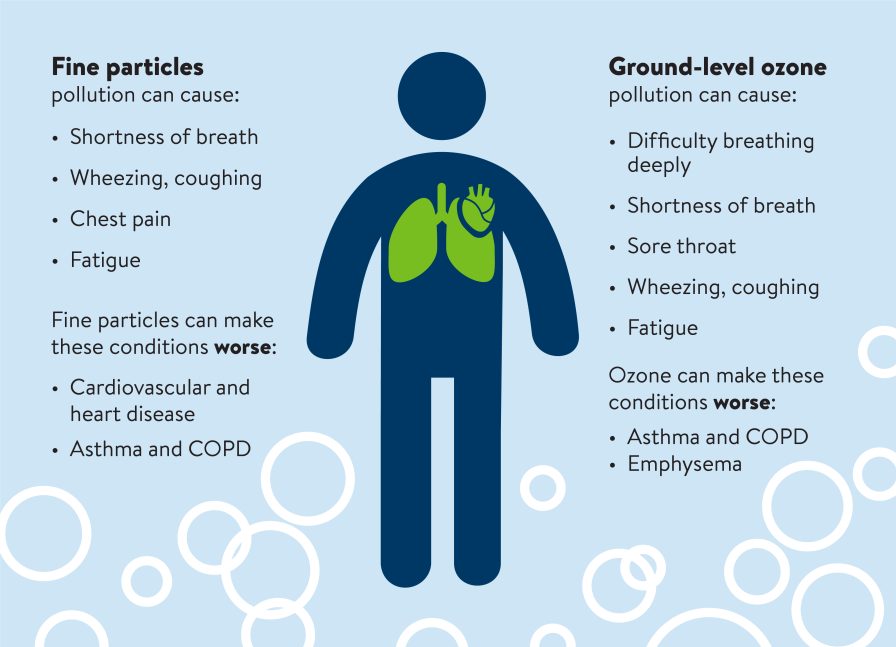

Air Pollution: Everything You Need To Know
What is Air Pollution?

Air pollution refers to the release of pollutants into the air—pollutants that are
detrimental to human health and the planet as a whole. According to the World Health Organization (WHO),
each year, indoor and outdoor air pollution is responsible for nearly seven million deaths around the globe.
Ninety-nine percent of human beings currently breathe air that exceeds the WHO’s guideline limits for
pollutants, with those living in low- and middle-income countries suffering the most. In the United States,
the Clean Air Act, established in 1970, authorizes the U.S. Environmental Protection Agency (EPA) to
safeguard public health by regulating the emissions of these harmful air pollutants.
What causes air pollution?
“Most air pollution comes from energy use and production,” says John Walke, director of the Clean Air team
at NRDC. Driving a car on gasoline, heating a home with oil, running a power plant on fracked gas: In each
case, a fossil fuel is burned and harmful chemicals and gases are released into the air.“We’ve made progress
over the last 50 years in improving air quality in the United States, thanks to the Clean Air Act. But
climate change will make it harder in the future to meet pollution standards, which are designed to protect
health,” says Walke.
Effects of Air Pollution

Air pollution is now the world’s fourth-largest risk factor for early death. According to the
2020 State of Global Air report—which summarizes the latest scientific understanding of air pollution around
the world—4.5 million deaths were linked to outdoor air pollution exposures in 2019, and another 2.2 million
deaths were caused by indoor air pollution. The world’s most populous countries, China and India, continue
to bear the highest burdens of disease.
Air Pollution Causes

Anthropogenic air pollution sources are:
- Combustion of fossil fuels, like coal and oil for electricity and road transport, producing air pollutants like nitrogen and sulfur dioxide
- Emissions from industries and factories, releasing large amount of carbon monoxide, hydrocarbon, chemicals and organic compounds into the air
- Agricultural activities , due to the use of pesticides, insecticides, and fertilizers that emit harmful chemicals
- Waste production , mostly because of methane generation in landfills.
Air Pollution in India
Air pollution is a global public health crisis, and air pollution levels in India are among the highest in
the world, posing a heavy threat to the country’s health and economy. According to the 2019 World Air
Quality Report, India is home to 21 of the 30 most polluted cities in the world. In these cities, air
quality can be as much as 10 times over the safe limits of air pollution recommended by the WHO.
Why is air pollution such a significant issue?
Loss of life
According to the State of Global Air 2020 report, air pollution was the fourth leading risk factor for early
death worldwide in 2019, and is estimated to have caused 1.7 million premature deaths in India in that year.
The burden of disease due to air pollution is higher in low- and middle-income countries, causing about 91
percent of premature deaths.Economic losses
While the hazardous impact of air pollution on health is well recognised, its negative economic impact is
less investigated. Lost output from premature deaths and morbidity attributable to air pollution accounted
for economic losses of USD 28.8 billion and 8 billion respectively in 2019. In India, economic losses from
air pollution were equivalent to 1.36 percent of the country’s GDP.

Issues
It’s much easier to avoid microplastics than it is to destroy them. In the same way it’s easier to avoid
stepping in dog poo than it is to clean it off your shoe.
- Serious respiratory illnesses Air pollution causes more than 50 percent of acute lower respiratory infections in children under five years of age in low- and middle-income countries. It can lead to asthma, childhood cancers, chronic diseases, poor lung function, pneumonia, and other types of acute lower respiratory infection. This study from Delhi observed a statistically significant positive association between air pollution (PM10 level) and the prevalence of lower respiratory tract symptoms. These symptoms were more prevalent in girls than in boys. Every third child in Delhi has impaired lungs due to the high level of pollutants that are present in the city’s air.
- Premature births, infant deaths, and a negative impact on child growth Pregnant women exposed to polluted air are more likely to give birth prematurely and have small, low birth-weight children. A recent study from India revealed a negative impact of exposure to air pollution during the first trimester of pregnancy on child growth indicators.
- Negative impacts on children’s neurodevelopment Prolonged exposure to polluted air negatively impacts neurodevelopment in children. According to the WHO, new research has shown an association between prenatal exposure to high levels of air pollution and developmental delay at age three, as well as psychological and behavioural problems later on, including symptoms of attention deficit hyperactivity disorder, anxiety, and depression. Air pollution affects children’s learning process by exacerbating respir
Controlling Air Pollution

- National Clean Air Programme: In 2020, the central government allocated approximately USD 1.7 billion to fight air pollution in 42 Indian cities that have a population of more than one million. This is conditional on these cities reducing their air pollution levels by 15 percent every year. It is the world’s first performance-based fiscal transfer funding programme for air quality management in cities.
- Coordinated action to improve air quality Parliament approved a law in August 2021 to establish the Commission of Air Quality Management for better coordination, research, identification, and resolution of problems related to air quality in the National Capital Region and adjoining areas.
- Disseminating information about the problem and health risks.
- Providing incentives to cities/states and other stakeholders for tackling air pollution.
- Building institutions that support air quality management. This requires sufficient funding and a sustained focus on capacity building.
However, much more needs to be done. The air pollution challenge in India is inherently multisectoral. Policies and investments supporting cleaner transport, power generation and industry; energy-efficient homes, and better municipal waste management will reduce key sources of outdoor air pollution. Experiences in tackling air pollution in cities suggest three possible ways forward: